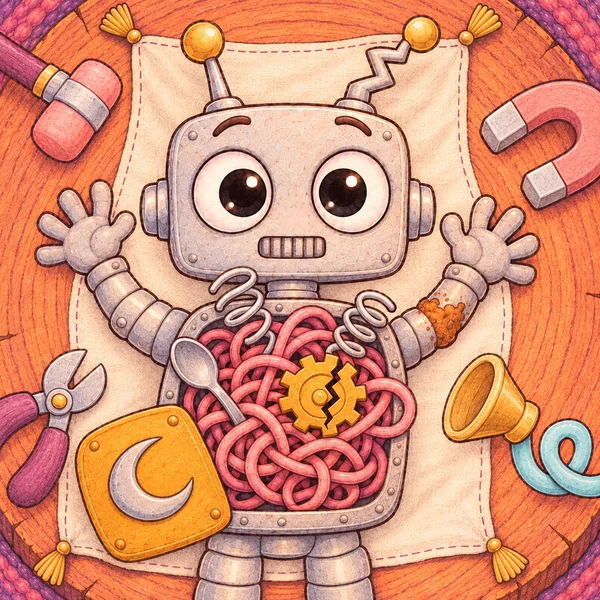

Oro's Check-up Be Oro's robot doctor Play nowMore games are on the way, with Sola and Rose too.
Games from the Moonmist, made for children aged 4 to 7. Each one is a little adventure with Sola, Oro and Rose, with real Starcora voices and nothing to read. Turn the sound on, tap play and away you go.
About Oro's Check-up
Oh bolts! Oro has gone all wonky and he needs a doctor. That's you! X-ray his tummy, snip the tangles, saw off a rusty bolt, stitch him up and wind his key until he's as good as new.
What children practise
Following steps in order, using tools for a purpose, careful hand control (circling, tracing, back-and-forth and dot-to-dot moves), looking closely to find a problem, and listening to spoken instructions.
Playing on a phone
Hold the phone upright. The game fills the screen, and Oro talks you through every step. Tap the speaker to hear a line again.